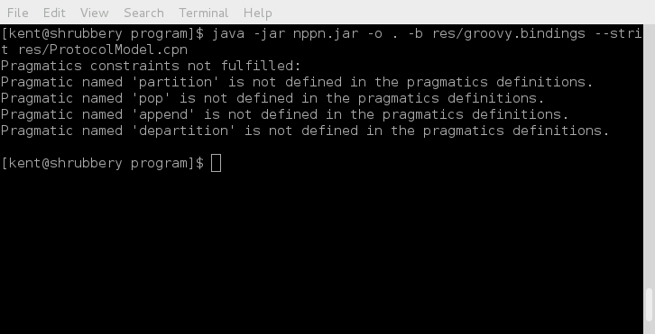
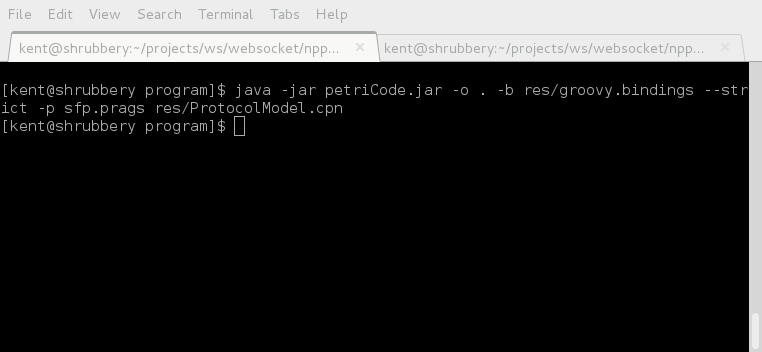

PetriCode examples -- Walkthrough
On this page we will go through the process of using petriCode to use the model showin here to produce the code that is shown here. Enjoy!
The Pragmatics descriptors
For this example it is not stricly nessesary to add additional pragmatics descriptors since no extra derived pragmatics are defined. However, for the sake of comepleteness and to make sure we can use even use petriCode in strict mode we will make definitions for all the extra pragmatics. To find out which pragmatics are not defined we first run the generation process in strict mode, so that it will fail and give appropriate messages if some pragmatics are missing. Here is the result.
In order to ammend the core pragmatics we make a pragmatics description file with a pragmatic descriptor for each of the missing pragmatics. For simplisity we assume that all these pragmatics are explicit and do not need to be constrained. Then the descriptor for each consists of a name, a parenthesis with a map with a single key "origin" and the value "explicit". The file is calles sfp.prags.

Now, all that remains is to run the generator. Luclily the pragmatics bindigs already contains bindings for all the pragmatics in this example so it does not need to be ammended. After running petriCode the files Sender.groovy and Reciever.groovy containing the code for the Sender and Reciever principals respectively.
